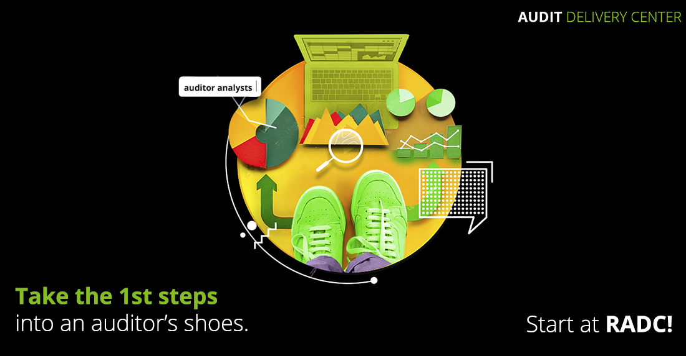

<!DOCTYPE html>
<html lang="en">
  <head>
    <meta charset="UTF-8" />
    <meta http-equiv="X-UA-Compatible" content="IE=edge" />
    <meta name="viewport" content="width=device-width, initial-scale=1.0" />
    <title>RADC Recruitment 2021</title>
    <link rel="stylesheet" href="css/style.css" />
    <script>
      document.querySelectorAll('a[href^="#"]').forEach((anchor) => {
        anchor.addEventListener("click", function (e) {
          e.preventDefault();

          document.querySelector(this.getAttribute("href")).scrollIntoView({
            behavior: "smooth",
          });
        });
      });
    </script>
  </head>
  <body>
    <div class="radc-2021-wrapper">
      <div class="wrap-container">
        <!-- HEADER IMAGE -->
        
        <!-- INTRO SECTION -->
        <div class="intro-section">
          
          <div class="intro-section-wrapper">
            <div class="intro-section-job">
              <h1 class="job-text"><span class="green nowrap">Junior Audit Analyst</span> <span class="nowrap">Career Opportunities</span> in our <span class="bold nowrap">Regional Audit Delivery Center</span> <span class="bold">(RADC | Deloitte)</span></h1>
              <a href="#" target="_blank" class="discover-jobs bold">Discover job opportunities</a>
            </div>
            <a href="#info" class="intro-section-anchor">
              <span class="why-join bold">
                Why <br />
                <span class="nowrap">join us?</span>
              </span>
              <span class="arrow"></span>
            </a>
          </div>
        </div>
        <!-- INFOGRAPHIC -->
        <div class="infographic-container" id="info">
          <div class="infographic-box career">
            <h2>The perfect place to <span class="bold">build a career</span></h2>
            <p>Make your mark in a <span class="bold">leading organization</span>. Deloitte serves 4 out of 5 Fortune Global 500 companies in over 150 countries and territories, with over 330,000 professionals worldwide and over 2,000 in Romania.</p>
            <p>Step into a <span class="bold">thriving environment</span>. Deloitte Romania was voted the <span class="bold">Most Desired Employer</span> in our country, in the Financial Services Industry, in the 2020 Catalyst survey.</p>
            <p>Pave your <span class="bold">career path</span>. <span class="bold">Half</span> of our colleagues got promoted during last year. Those who became <span class="bold">team leaders</span> earned this title after just <span class="bold">5 years</span> in our team.</p>
            
          </div>
          <div class="infographic-box recognition">
            <h2>Professional <span class="bold">recognition</span></h2>
            <p>Advance based on <span class="bold">merit</span>. We base promotions on a clear set of <span class="bold">objectives</span> we agree upon at the beginning. We also have a monthly internal <span class="bold">reward program</span>.</p>
            
          </div>
          <div class="infographic-box attention">
            <h2><span class="bold">Attention</span></h2>
            <p>Move <span class="bold">your feedback</span> forward. At RADC, we organize <span class="bold">Open Doors</span> Meetings, <span class="bold">All Staff</span> Meeting, <span class="bold">One to One</span> discussions and <span class="bold">HR Talks</span> for you to ask the questions you need. We also implement <span class="bold">Anonymous Surveys</span> periodically.</p>
            
          </div>
          <div class="infographic-box growth">
            <h2><span class="bold">Growth</span></h2>
            <p>Walk towards various <span class="bold">learning opportunities</span>. In 2020, we offered our people more than <span class="bold">52.000 hours of trainings</span>.</p>
            <p><span class="bold">Escalate</span> in the directions you want to develop. We offer <span class="bold">ACCA</span> certifications, <span class="bold">language</span> trainings and <span class="bold">soft skills</span> trainings.</p>
            
          </div>
          <div class="infographic-box multi">
            <h2><span class="bold">Multicultural</span> community</h2>
            <p>Step into a <span class="bold">friendly environment</span>. We have over 400 auditor analysts, <span class="bold">24 years-old</span> average age. Move freely through an <span class="bold">inclusive community</span>. More than <span class="bold">50% of our leaders are women</span>. Jump into a <span class="bold">multicultural environment</span>. We’ve reached a no. or <span class="bold">16 countries</span> in our client portfolio.</p>
            
          </div>
        </div>
        <!-- JOB DESCRIPTION -->
        <div class="job-description-wrapper">
          
          <div class="job-description-content">
            <div class="job-description-paragraph">
              <p>As a <span class="bold">JUNIOR AUDIT ANALYST</span>, you will be part of an international team, supporting one of our Deloitte member firms from over 16 countries: <span class="green">Belgium, Canada (French), Central Europe, Cyprus, Denmark, France, Germany, Ireland, Italy, Middle-East, Spain, Switzerland, UK, Norway, Sweden, Luxembourg.</span></p>
              <p>You will not only learn how to perform audit activities, but you will learn how to deliver high-quality audits of financial statements for various national and international companies and institutions, in accordance with local accounting standards, which you will soon master. Your tasks will include <span class="green bold">pre-processing</span> of information and preparing <span class="green bold">audit documentation</span> in Deloitte audit software <span class="green bold">using templates</span>.</p>
            </div>
            <div class="job-description-paragraph">
              <p class="green bold">To qualify for the role, you must first check the following:</p>
              <ul>
                <li>University student or graduate of any faculty</li>
                <li>Knowledge of English and the language you apply for (a B2 level);</li>
                <li>Good analytical and communication skills;</li>
                <li>Systematic approach to work and ability to prioritize workload under pressure;</li>
                <li>Good command of the Microsoft Office package (mainly Excel and Word);</li>
              </ul>
              <p class="green bold">Click on the buttons below for the complete job description!</p>
              <p>Take the 1st step in our Regional Audit Delivery Centre in Bucharest, practicing and improving one of the following language skills:</p>
            </div>
          </div>
        </div>
        <!-- JOBS CTA -->
        <div class="job-cta-wrapper">
          <!-- JOB BANNER -->
          <div class="job">
            <h2 class="job-title">Junior Audit Analyst with English</h2>
            <a href="#" target="_blank" class="job-link english-link">It's THE job for me</a>
          </div>
          <!-- JOB BANNER -->
          <div class="job">
            <h2 class="job-title">Junior Audit Analyst with French</h2>
            <a href="#" target="_blank" class="job-link french-link">C'est LE travail pour moi</a>
          </div>
          <!-- JOB BANNER -->
          <div class="job">
            <h2 class="job-title">Junior Audit Analyst with German</h2>
            <a href="#" target="_blank" class="job-link german-link">Es ist DER job für mich</a>
          </div>
          <!-- JOB BANNER -->
          <div class="job">
            <h2 class="job-title">Junior Audit Analyst with Italian</h2>
            <a href="#" target="_blank" class="job-link italian-link">È IL lavoro per me</a>
          </div>
          <!-- JOB BANNER -->
          <div class="job">
            <h2 class="job-title">Junior Audit Analyst with Spanish</h2>
            <a href="#" target="_blank" class="job-link italian-link">Es EL trabajo para mi </a>
          </div>
        </div>
        <!-- FOLLOW US SECTION -->
        <div class="follow-us-section">
          <h3 class="social-title">Follow us on:</h3>
          <div class="social-icons-wrapper">
            <a class="social-link-icon" href="https://www.facebook.com/CareersAtDeloitteRomania/" target="_blank"></a>
            <a class="social-link-icon" href="https://www.instagram.com/deloitteromania/" target="_blank"></a>
            <a class="social-link-icon" href="https://www.linkedin.com/company/deloitte/posts/?feedView=all" target="_blank"></a>
          </div>
        </div>
      </div>
    </div>
  </body>
</html>
